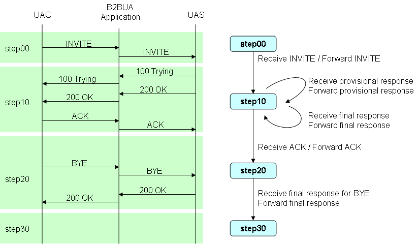

sf-flow-api
Application
This tutorial develop B2BUA application.
The SIP sequence of application is Fig.6.

Fig.6 SIP sequence of B2BUA application
Develop B2BUA application
This tutorial develop with the steps of Fig.5.

Fig.5 The steps of development
Design of state transition
The state transition of B2BUA application is Fig.7.
This tutorial is describe of development application from the state transition diagram.
Fig.7 The state transition diagram of B2BUA application
Create an archetype
Type the following command to create Archetype for sf-flow.
$ mvn archetype:create -DarchetypeGroupId=org.mobicents.ssf -DarchetyepArtifactId=sf-flow-archetype -DarchetypeVersion=2.0-SNAPSHOT -DgroupId=com.oki.sample -DartifactId=b2bua
Then the archetype will be generated.

Create a flow package, Set initial state-name
In this tutorial, FlowRoot is "com.oki.sample.b2bua.flow", and initial State is "step00".
The package-ingo.java is below.

mvn compile, Auto generated a State package
Type and run following command.
$ mvn compile
Then State "step00" will be generated.
Create the Evaluate class and set the transitions.
SipRequest Class should be created in the step00. When received INVITE from UAC, the application start the process.

The annotated with @Evaluate method is below.
@Evaluate
public String evaluate(SipServletRequest req) {
if (req.isInitial() && "INVITE".equals(req.getMethod())) {
return "action.forwardInv";
}
return null;
}
After this method, com.oki.sample.b2bua.flow.action.ForwardInvAction will be called. If return value of method include ".", sf-flow handle it java package that part of before ".".
The null means no transition.
When the return value of method is "action.forwardInv", the value of @TransitionSet should be "action.forwardInv" too.
@TransitionSet(values={"action.forwardInv"})
public class SipRequest {
mvn compile, Auto generated the Action class
Type and run following command.
$ mvn compile
Then the "action" package and "ForwardInvAction" class will be generated.

Implement the Action class and set the transitions.
The application forward the INVITE request to UAS. The method of ForwardInvAction is below.
public void execute(SipServletRequest req, SipFactory factory, PeerLocation peerLocation) throws Exception {
// create HeaderMap
SipURI uri = (SipURI)peerLocation.getAddress(req.getFrom(), req.getTo()).getURI();
Map<String, List<String>> map = HeaderMapUtil.createHeaderMap("To", uri.toString());
// create new INVITE Request
B2buaHelper helper = req.getB2buaHelper();
SipServletRequest invite = helper.createRequest(req, true, map);
invite.setRequestURI((URI)uri);
SipContentUtil.copy(req, invite);
// send INVITE Request
invite.send();
}
PeerLocation is Interface. It provides a forward address. The implemented Class of the Interface should be registered as spring bean in the sipflow-servlet.xml PeerLocationImpl will return the address(targetHost + ":" + targetPort).
<bean id="peerLocation" class="com.oki.sample.b2bua.bean.PeerLocationImpl">
<property name="targetHost" value="127.0.0.1" />
<property name="targetPort" value="5065" />
</bean>
HeaderMapUtil and SipContentUtil are Utility Class. Please see the source about these Class details
Next State is "step10" so that the value of @Transition is "step10".
@Transition("step10")
public void execute(SipServletRequest req, SipFactory factory, PeerLocation peerLocation) throws Exception {
Implement Step10
In this section, the way to implement step10 is the same as step00.
Type and run following command to create step10 package.
$ mvn compile
SipRequest and SipResponse Class should be created in the step00. Because application server is received SIP request and SIP responses. SIP request is ACK. SIP responses are 1xx and 200 OK.
SipResponse Class is below.
@TransitionSet(values={"action.forward1xx", "action.forwardResInv"})
public class SipResponse {
@Evaluate
public String evaluate(SipServletResponse res) {
int status = res.getStatus();
String method = res.getMethod();
if ("INVITE".equals(method)) {
if (status < 200) {
return "action.forward1xx";
} else {
return "action.forwardResInv";
}
}
}
Here are two return values.
| Return Value | Description |
| action.forward1xx | Send provisional response. No transition. |
| action.forwardResInv | Send final response for INVITE. No transition. |
Type and run following command to generate the Action Classes.
$ mvn compile
Implementation of Forward1xxAction is below.
public class Forward1xxAction {
@Transition("step10")
public void execute(SipServletResponse res) throws IOException, Rel100Exception {
// create new Response
B2buaHelper helper = res.getRequest().getB2buaHelper();
SipServletRequest orgReq = helper.getLinkedSipServletRequest(res.getRequest());
SipServletResponse res2 = orgReq.createResponse(res.getStatus());
SipContentUtil.copy(res, res2);
// send new Response
res2.send();
}
}
Implementation of ForwardResInvAction is below.
public class ForwardResInvAction {
@Transition("step10")
public void execute(SipServletResponse res) throws IOException {
// create new Response
B2buaHelper helper = res.getRequest().getB2buaHelper();
SipSession peerSession = helper.getLinkedSession(res.getSession());
SipServletResponse res2 = helper.createResponseToOriginalRequest(peerSession, res.getStatus(), res.getReasonPhrase());
SipContentUtil.copy(res, res2);
// send new Response
res2.send();
}
}
SipRequest Class is below.
@TransitionSet(values={"action.forwardAck"})
public class SipRequest {
@Evaluate
public String evaluate(SipServletRequest req) {
if ("ACK".equals(req.getMethod())) {
return "action.forwardAck";
} else {
return null;
}
}
}
Here is an Action Class.
| Returned Value | Description |
| action.forwardAck | Send ACK request. Transit to next state after this. |
Type and run following command to generate Action Class.
$ mvn compile
Implementation of ForwardAckAction is below.
public class ForwardAckAction {
@Transition("step20")
public void execute(SipSession session, SipServletRequest req) throws IOException, Rel100Exception {
// create ACK request
B2buaHelper helper = req.getB2buaHelper();
SipSession peerSession = helper.getLinkedSession(req.getSession());
List<SipServletMessage> pendings = helper.getPendingMessages(peerSession, UAMode.UAC);
SipServletResponse res = B2buaHelperUtil.getPendingResponse(pendings, "INVITE");
SipServletRequest ack = res.createAck();
SipContentUtil.copy(req, ack);
// send
ack.send();
}
}